Префектура Ниигата · Этиго-Цумари · искусство
Арт-прогулка по Этиго-Цумари: террасы Кабаковых, «Последний класс» и туннель в ущелье
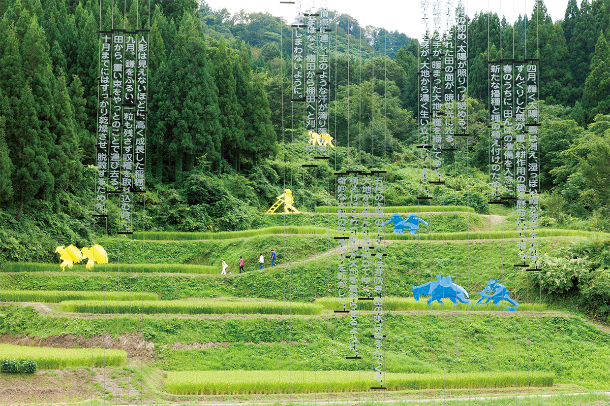
Этиго-Цумари в префектуре Ниигата одно из самых снежных мест на Земле. Здесь искусство служит путеводителем: идёшь от работы к работе и по дороге узнаёшь деревни, рисовые поля и людей, которые на них работают.
Земля искусства
Искусство как дорога по сатояме
Этиго-Цумари лежит на юге префектуры Ниигата, у границы с Нагано, и считается одним из самых снежных обжитых мест в мире. Деревни здесь пустели и старели, пока в 2000 году не прошёл первый фестиваль «Земля искусства» Этиго-Цумари. Фестиваль вырос в один из крупнейших международных арт-фестивалей мира: в 2018 году его посетили 540 тысяч человек.
Его идея звучит так: «Человек является частью природы». Известные художники из Японии и других стран создают работы вместе с местными жителями, и многие из них остаются здесь навсегда. Восьмой фестиваль прошёл с 29 апреля по 13 ноября 2022 года: к 210 постоянным работам добавились 123 новые, а площадь шести районов фестиваля составила около 760 км².
Но самое интересное не в громких именах. Работы связаны с землёй, на которой стоят, и через них чувствуешь здешний климат, рисоводство, деревенские праздники и память о закрытых школах. Ниже собраны постоянные работы, которые можно увидеть и между фестивалями.
Мацудай
«Рисовые террасы» и поле-музей Нобутай
Район Мацудай лежит в холмах вдоль реки Сибуми, притока Синано, со всех сторон его окружают горы. Среди деревенских пейзажей здесь стоят работы художников с мировым именем.
Самая известная из них, «Рисовые террасы» Ильи и Эмилии Кабаковых, появилась благодаря людям этих мест. В 1999 году Илья Кабаков приехал в Мацудай и с платформы станции на линии «Хокухоку» увидел террасы рисовых полей на другом берегу. Пейзаж его покорил, и он соединил его с идеей объёмной книжки-картинки, которую вынашивал ещё в советские годы. На поле встали фигуры крестьян за работой, а над ним стихи о сезонах выращивания риса.
Хозяин террас сначала отказался: он как раз собирался бросить поле. Но, прочитав стихи и увидев аккуратные чертежи художника, согласился и продолжал работать на этой земле до самой смерти.
Лучший вид на «Рисовые террасы» открывается из Нобутай, культурного центра у станции Мацудай. В 2021 году его вместе с соседним холмом и замком Мацудай превратили в поле-музей: еда, сельское хозяйство и искусство рассказывают здесь о земледелии снежного края.
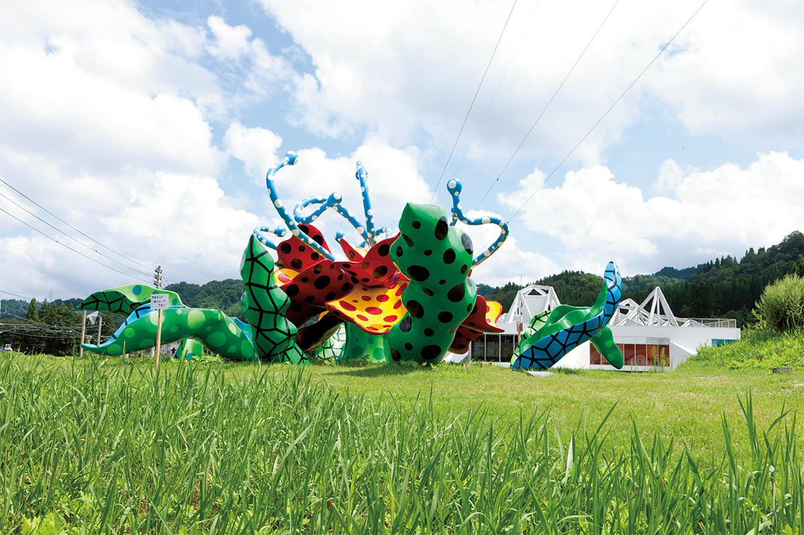
Внутри центра собраны работы Кабаковых, показанные впервые в 2021 году. «10 альбомов. Лабиринт» рассказывает в рисунках истории десяти мечтателей из Советского Союза. В «Библиотеке художника» можно полистать рисунки и фотографии, связанные с работами Кабаковых.
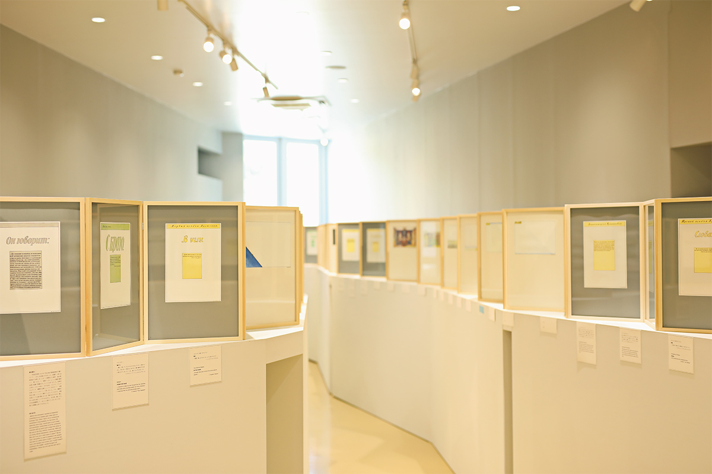
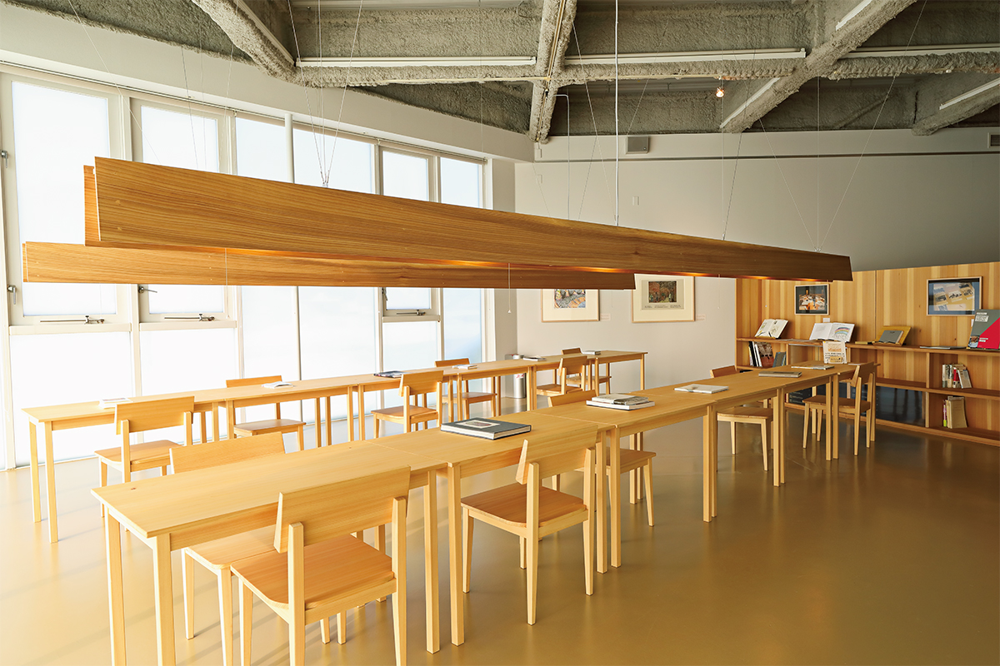
Под открытым небом у Нобутай стоит ещё одна работа супругов, «Арка жизни». Она показывает этапы человеческой жизни от рождения до смерти.
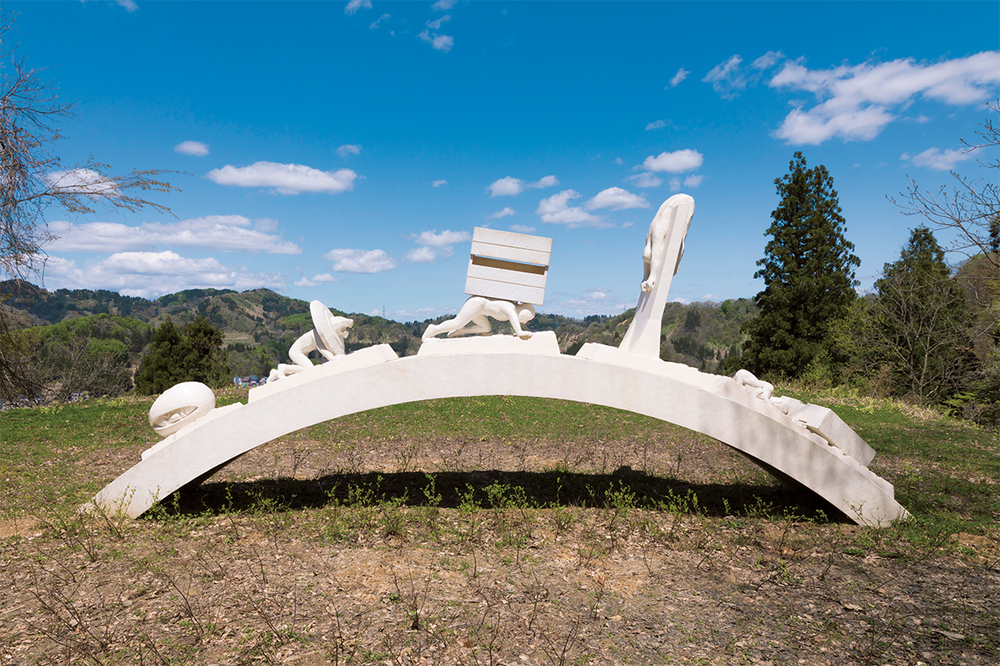
В том же центре есть класс, где всё пространство превращено в школьную доску. Зимой снег отрезал дальние деревни от школ, и для детей открывали зимние филиалы. Работа Тацуо Кавагути «Связи. Класс-доска» вспоминает такую школу, и на её стенах разрешено рисовать мелом.
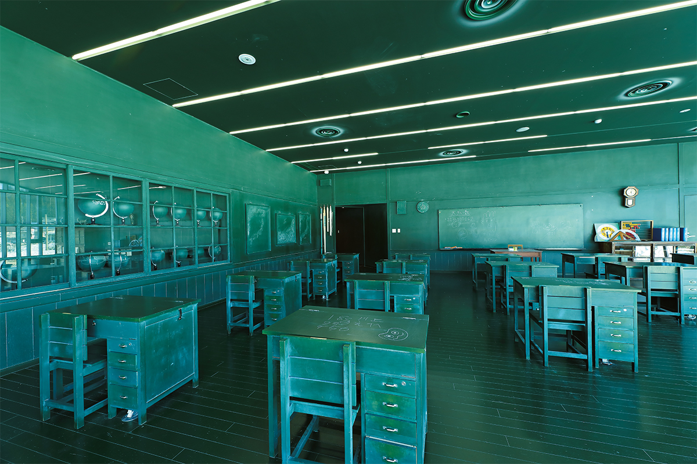
Нобутай (поле-музей Мацудай)
- Адрес
- префектура Ниигата, Токамати, Мацудай, 3743-1
- Телефон
- +81 25-595-6180
- Часы работы
- 10:00–18:00
- Выходные
- вторник и среда (кроме праздников)
- Цены / Вход
- билет в поле-музей 1200 иен (только Нобутай 600 иен) или паспорт фестиваля
- Даты
- круглый год
Башня
«Башня, взявшаяся за руки»: работа о надежде
Рядом с Нобутай стоит ещё одна работа Кабаковых, «Башня, взявшаяся за руки». Это памятник связи между людьми поверх границ народов, религий и культур, символ мира, уважения, диалога и жизни вместе. С наступлением темноты башню подсвечивают разными цветами.
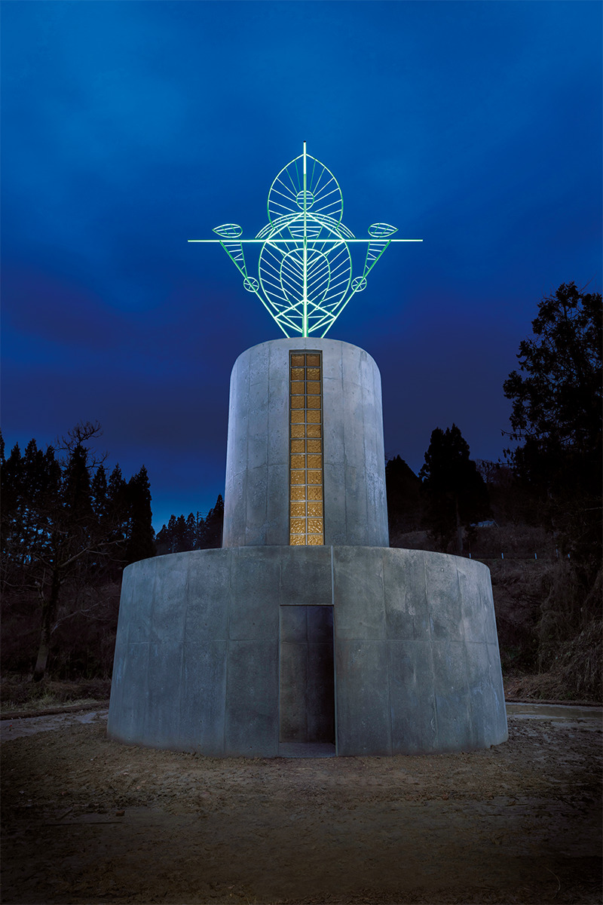
История башни началась в 2020 году, когда по миру пошла пандемия. Илья Кабаков сказал генеральному директору фестиваля, что художники обязаны внести свой вклад. Из этого разговора вырос проект «Мечты Кабакова»: в 2021 году в Нобутай и в музее MonET показали пять новых работ, а итогом проекта в 2022 году стала башня. В начале 2022 года, когда началось вторжение в Украину, Кабаковы, оба родом из тех краёв, тяжело переживали новости, и башню подсветили синим и жёлтым.
«Мы создаём памятник, который должен побуждать людей мирно говорить о своих различиях, проблемах и интересах. Цвет башни меняется, когда на неё падает свет: это знак того, что она связана с миром и с сердцами людей, и работа откликается на мир»
Илья Кабаков
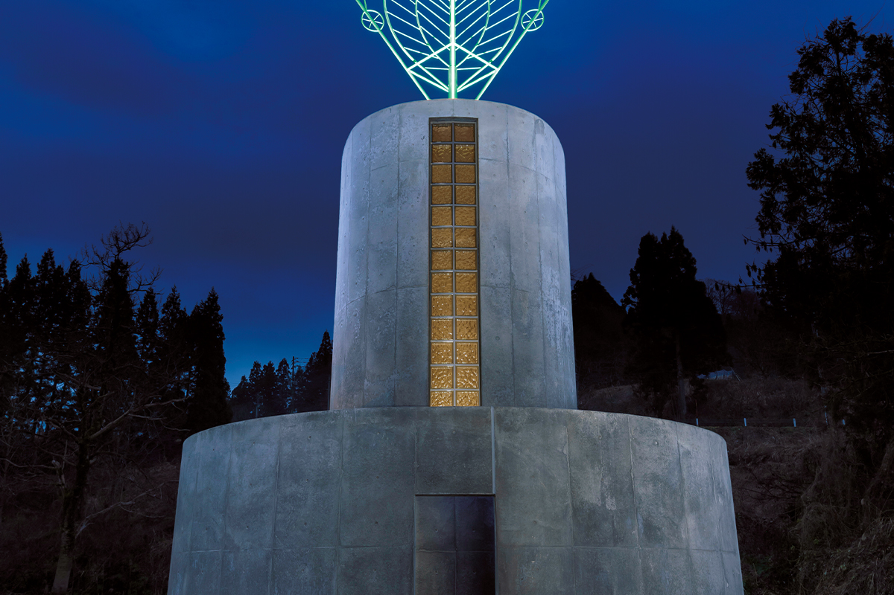
В основании башни устроен круглый зал. Здесь показывают модель «Корабля, взявшегося за руки». Его паруса Кабаковы собирали как мозаику из детских рисунков со всего мира: проект учит уважать разные культуры и взгляды.
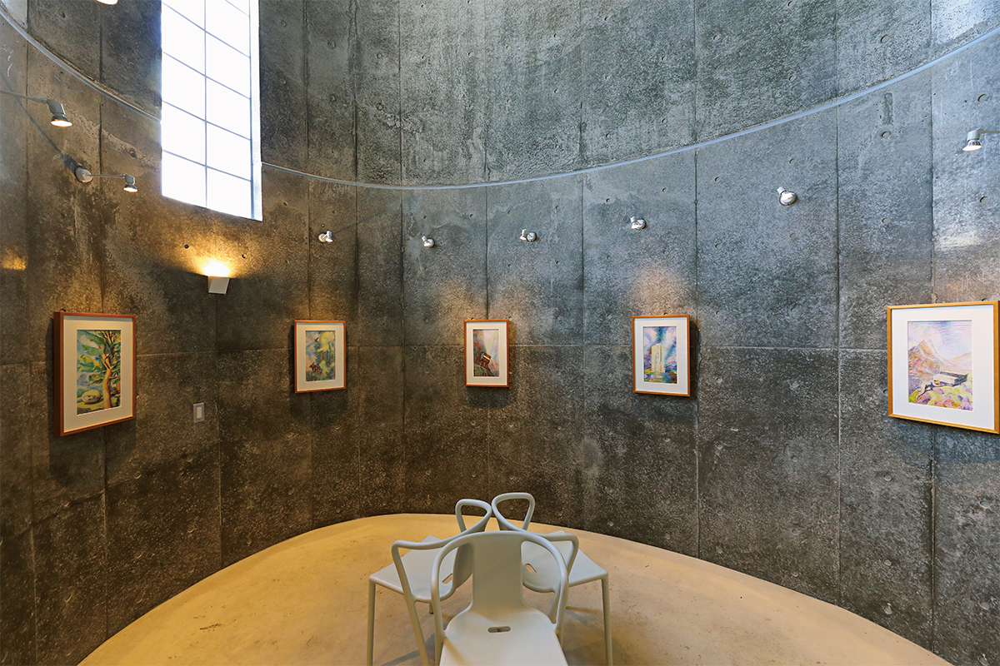
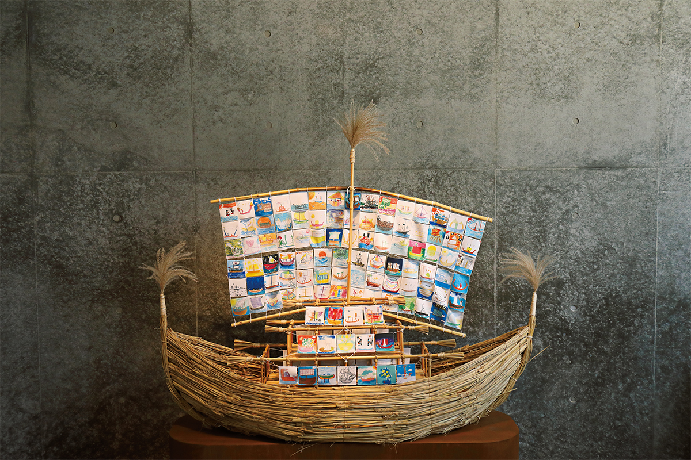
Искусство здесь не просто стоит в поле. Оно даёт силы деревне и, возможно, приносит надежду всему миру.
«Башня, взявшаяся за руки»
- Адрес
- префектура Ниигата, Токамати, Мацудай, 3743-1, у Нобутай
- Часы работы
- в майские праздники 10:00–19:00, в мае–июле до 18:00, в августе до 19:30, в сентябре до 18:30, в октябре до 17:30; подсветка от заката до 21:00
- Выходные
- вторник и среда
- Цены / Вход
- билет в поле-музей Нобутай 1200 иен (только Нобутай 600 иен) или паспорт фестиваля
- Даты
- в 2022 году до 13 ноября
Деревня
Мальчик в красной повязке
В деревне Коарато на берегу реки Сибуми стоят деревянные фигуры мальчиков. Работу Тэцуо Сэкинэ «Вернувшийся мальчик в красной набедренной повязке» сделали в 2006 году по воспоминаниям здешних мужчин: они плавали в реке в одних красных повязках.
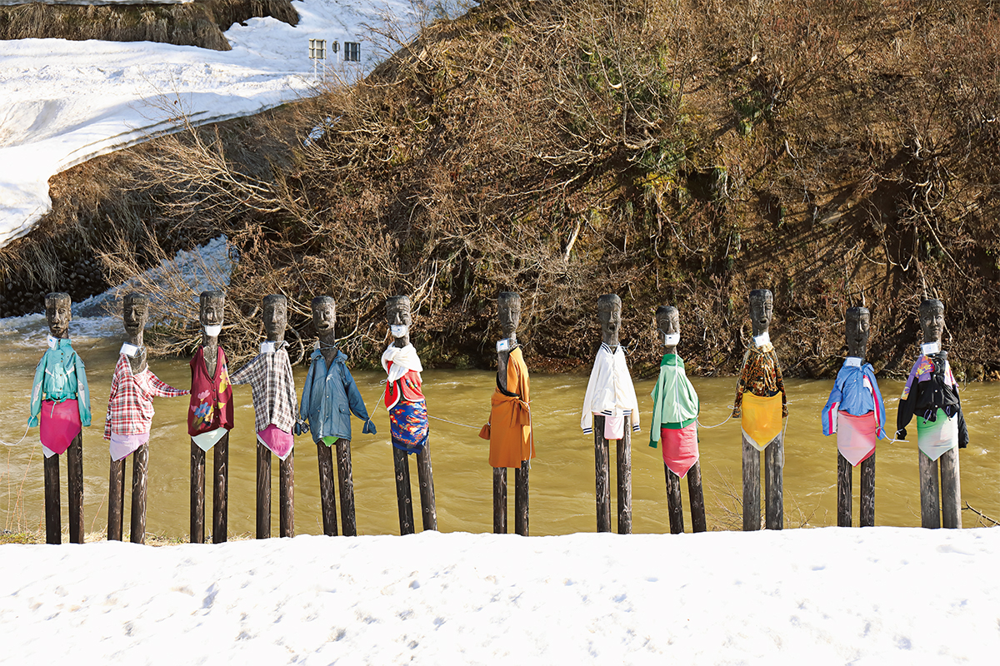
В 2009 году фигуры по просьбе деревни выставили снова, а жители, решив, что мальчикам холодно, надели на них одежду.
«Вернувшийся мальчик в красной набедренной повязке»
- Адрес
- префектура Ниигата, Токамати, Коарато
- Часы работы
- в светлое время дня
- Выходные
- вторник и среда
- Даты
- круглый год
Мацунояма
«Последний класс»: память снежной школы
Район Мацунояма окружён горами и известен онсэном Мацунояма, одним из трёх главных лечебных источников Японии. Здесь же в закрытой школе устроена одна из работ фестиваля.
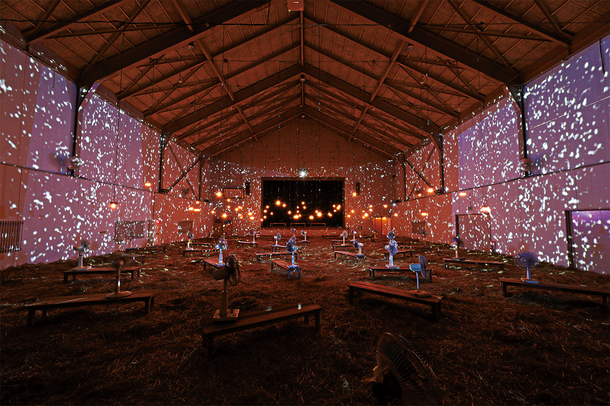
Кристиан Болтански и Жан Кальман увидели здешние снега своими глазами. Их общая инсталляция в здании и спортзале закрытой школы Хигасикава вспоминает зимнюю поездку художников в Этиго-Цумари и превращает школу в музей на тему «отсутствия человека». В спортзале пол засыпан соломой, как размокшая весенняя дорога, а гул вентиляторов звучит как голоса детей за окном. В полумраке, где едва горит свет, проступает память этого места.
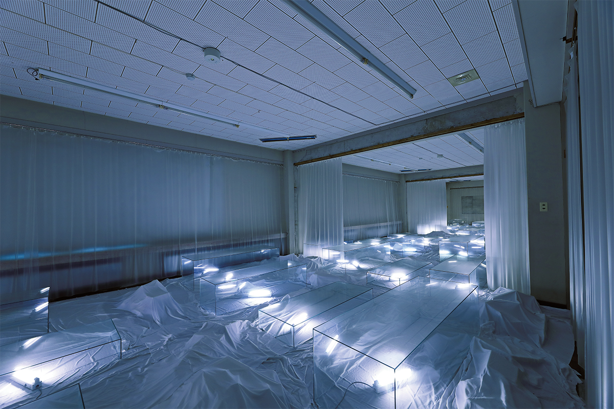
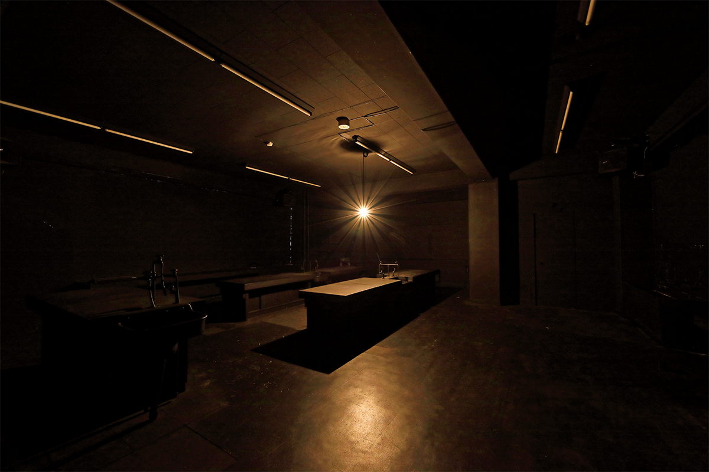
«Последний класс»
- Адрес
- префектура Ниигата, Токамати, Мацунояма-Хигасикава, 192 (бывшая начальная школа Хигасикава)
- Часы работы
- 10:00–17:00 (в октябре и ноябре до 16:00)
- Выходные
- вторник и среда
- Цены / Вход
- 800 иен или паспорт фестиваля
- Даты
- в 2022 году до 13 ноября
Накасато
Tunnel of Light в ущелье Киёцу
Район Накасато богат водой: здесь текут реки Синано, Киёцу, Кама и Нанацу. Ущелье Киёцу считают одним из трёх великих ущелий Японии и самым известным пейзажем Этиго-Цумари.
В туннеле длиной 750 метров, проложенном к ущелью, архитектор Ма Яньсун и бюро MAD Architects устроили работу Tunnel of Light. Туннель они представили подводной лодкой: три смотровые площадки и переходы между ними превращены в архитектурные пространства по пяти стихиям природы: дереву, земле, металлу, огню и воде.
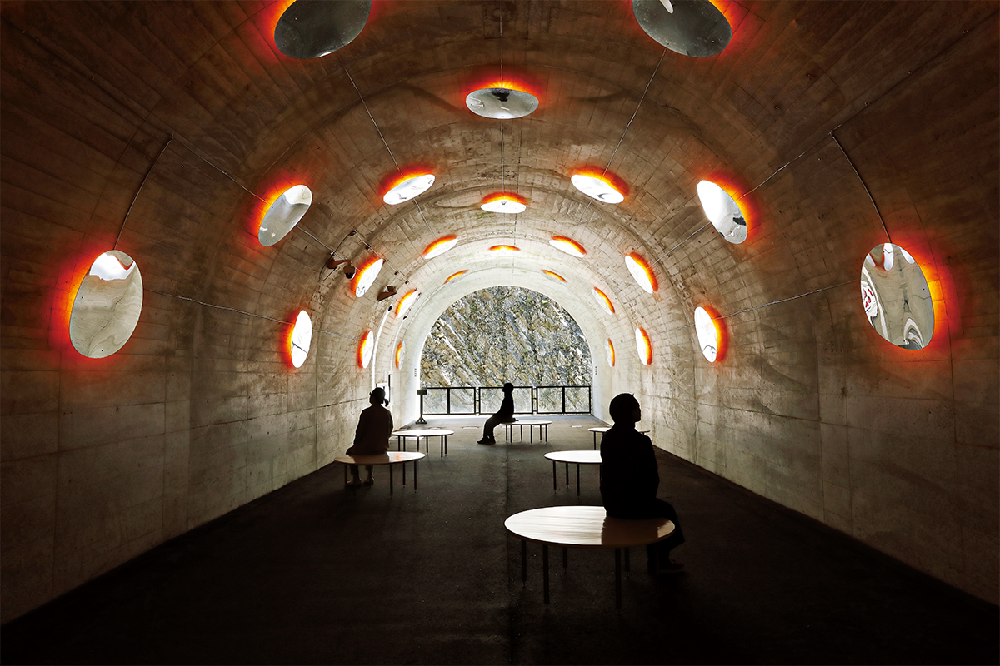
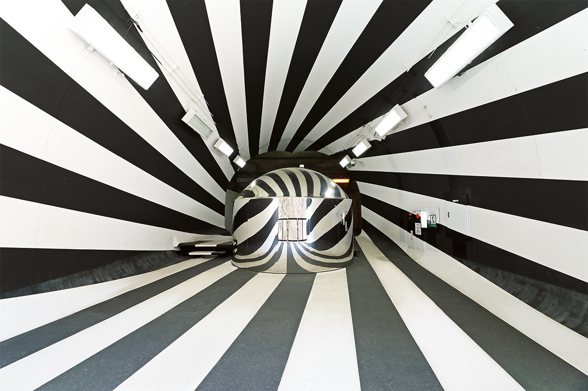
Конечная точка, «Пещера света», устроена как зеркальная водная гладь: в ней перевёрнуто отражается ущелье. Идёшь по воде, чувствуешь холод горного ручья и становишься частью этой картины. Весной здесь мягкая молодая зелень, осенью яркие клёны, а зимой ущелье похоже на рисунок тушью, написанный снегом.
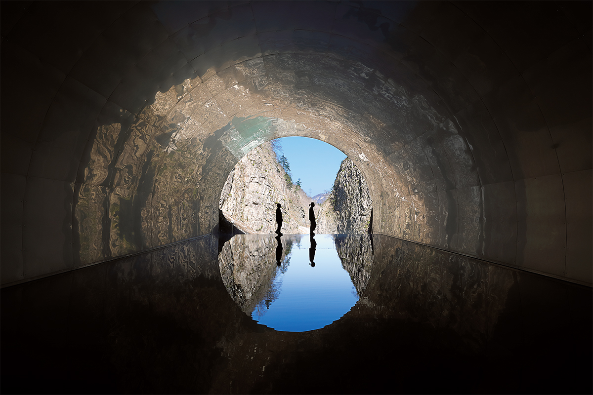
Tunnel of Light (туннель ущелья Киёцу)
- Адрес
- префектура Ниигата, Токамати, Коидэ, 2119-2
- Телефон
- +81 25-763-4800 (нужна предварительная бронь)
- Часы работы
- 8:30–17:00 (вход до 16:30)
- Выходные
- без выходных
- Цены / Вход
- 1000 иен (с паспортом фестиваля скидка 500 иен), школьники 400 иен
- Даты
- круглый год
Фото: Осаму Накамура, Норихито Судзуки.